Progress
Checked against the original code.
We decompiled the original game and compared every part of it with NovaSwift. Original behaviour is the default; a few optional Enhancements live in Settings.
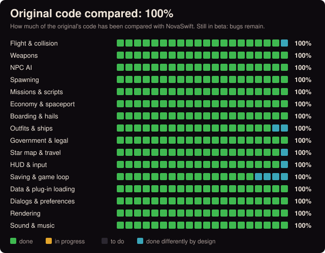
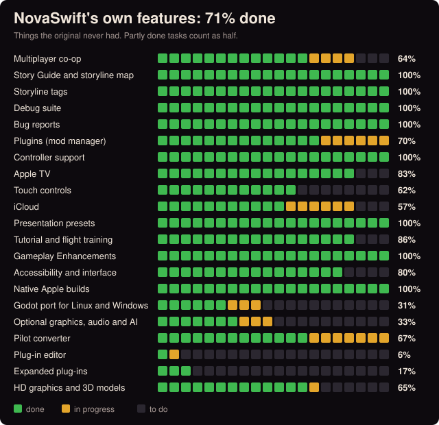
This shows how much has been compared, not that the game is finished. NovaSwift is in beta and still has bugs. See the details or report something that plays differently.
Additions
Things the original didn't have.
None of these change the game's rules, and you can turn each one off.
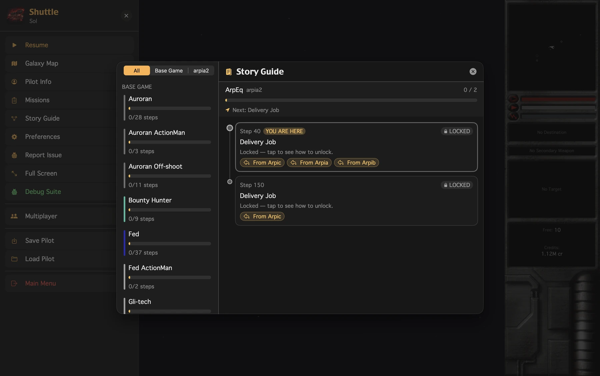
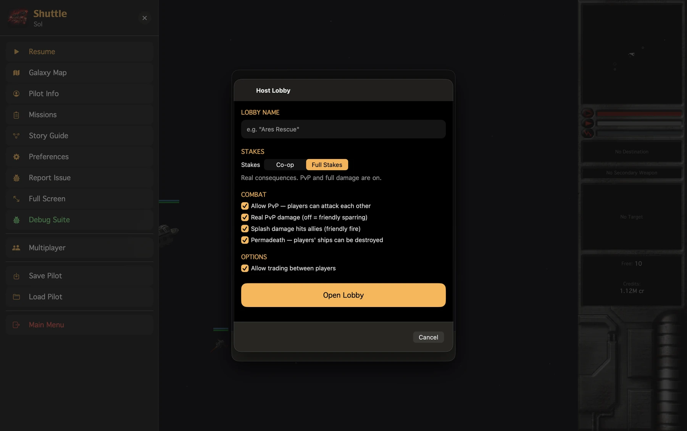
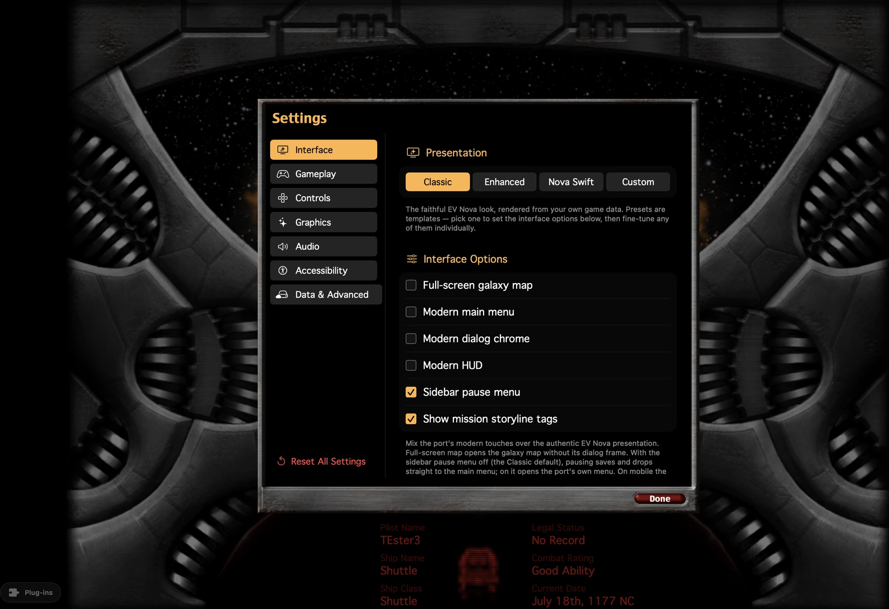
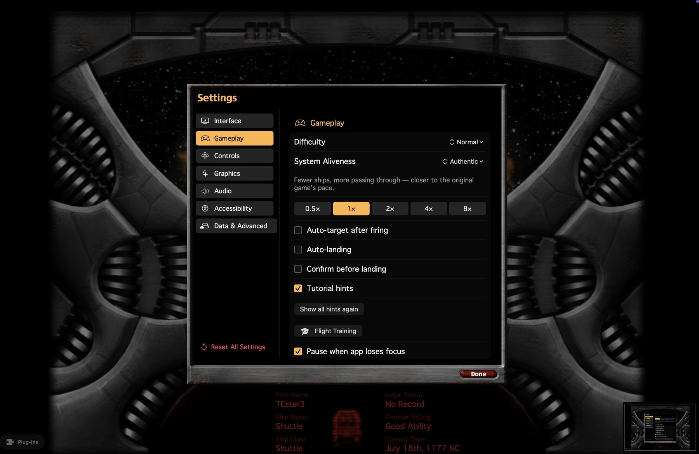
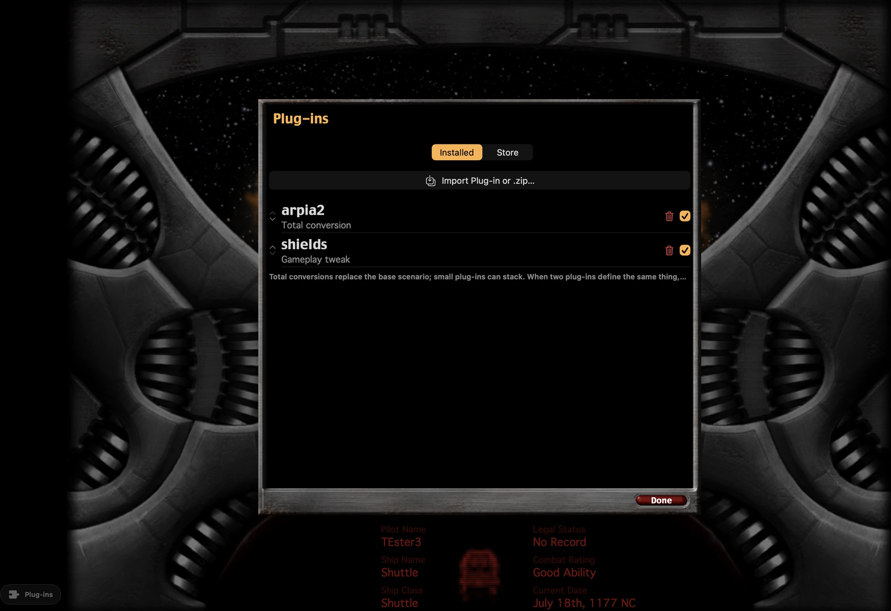
.zip. Reorder plug-ins or switch them off.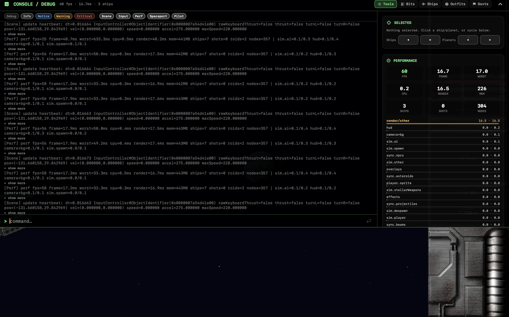
Running on iPhone
On a phone.
EV Nova never ran on mobile. These are captures from an iPhone.
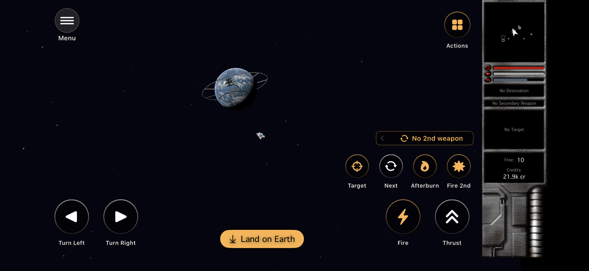
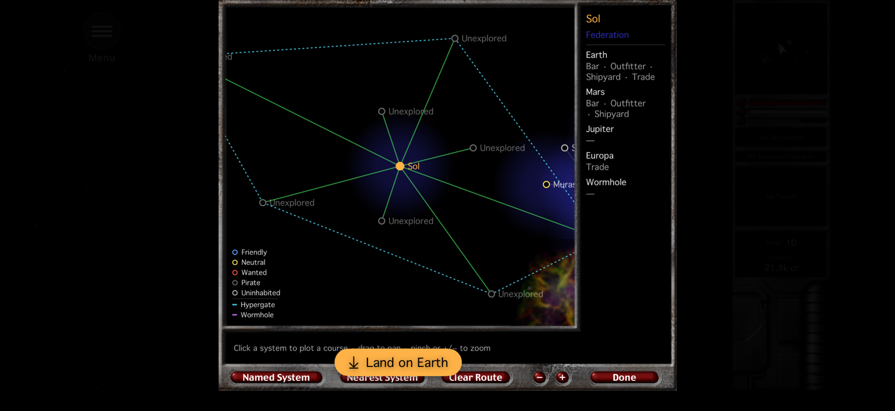
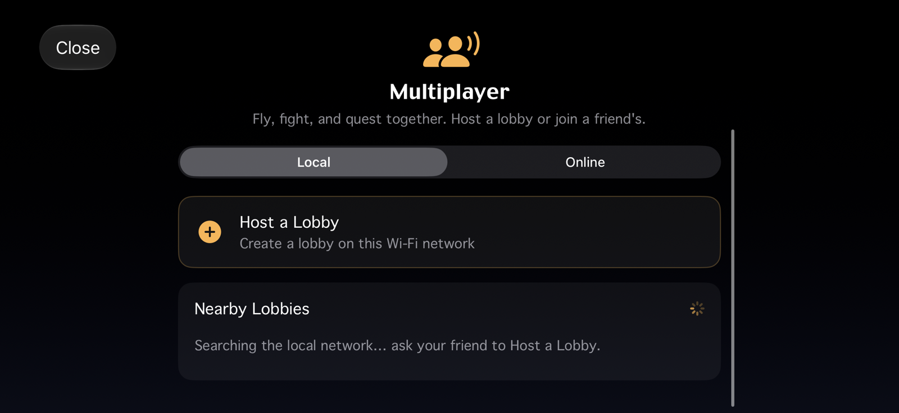
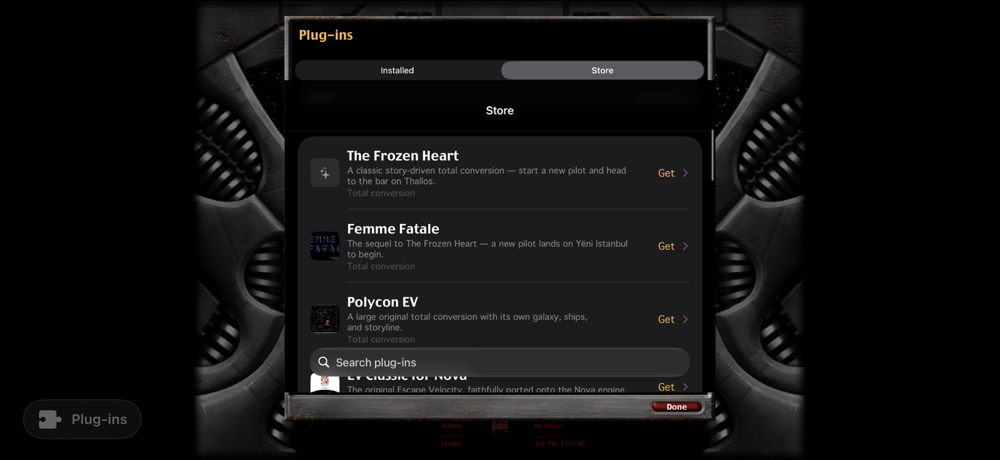
Get it
Play the beta or build it.
The TestFlight beta covers all four Apple platforms.
To build it yourself you need a Mac with Xcode. Your game data stays on your machine.
# clone and fetch dependencies
git clone https://github.com/SirStig/NovaSwift.git
cd NovaSwift && scripts/setup.sh
# drop your own EV Nova data into data/base/
# then open it in Xcode, pick a target, hit Run
open app/NovaSwift.xcodeprojYou bring the game.
EV Nova's content belongs to ATMOS. This project ships no game data and never will. It reads a copy you own, at runtime, the same way OpenMW and OpenRA work.